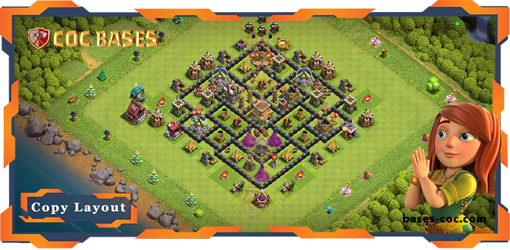
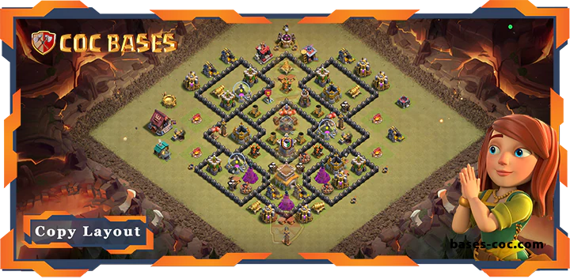
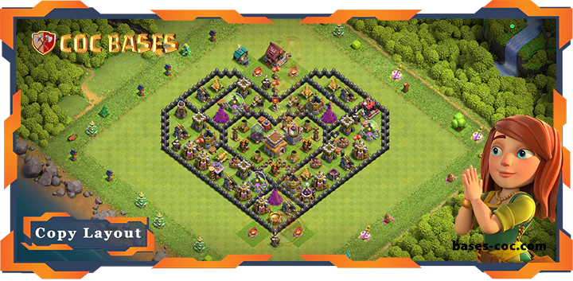
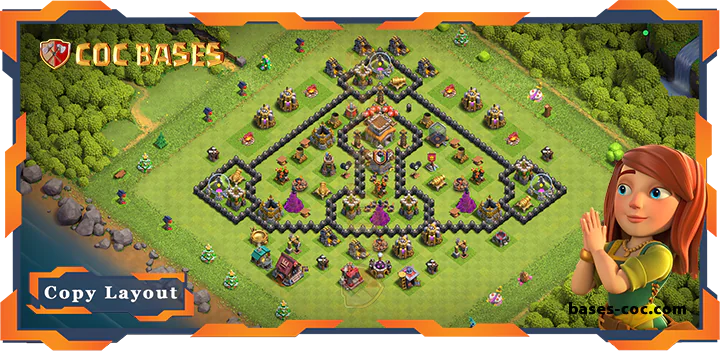
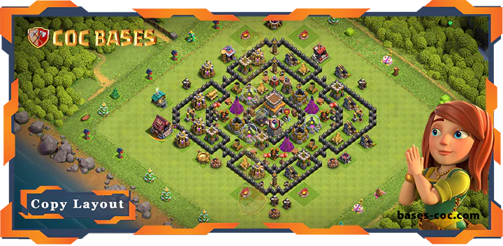
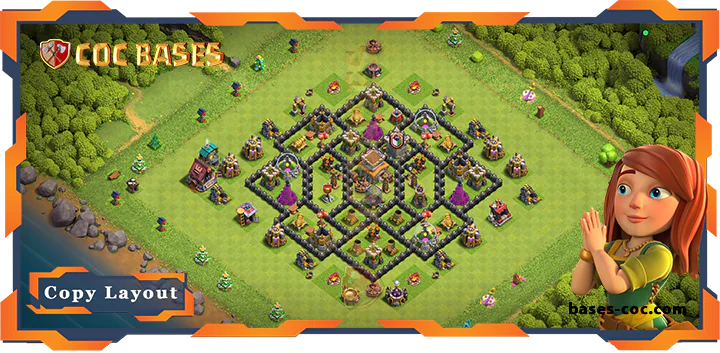
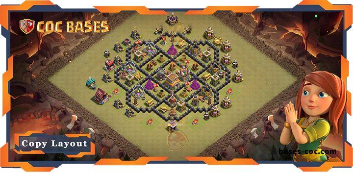
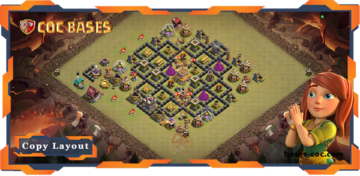
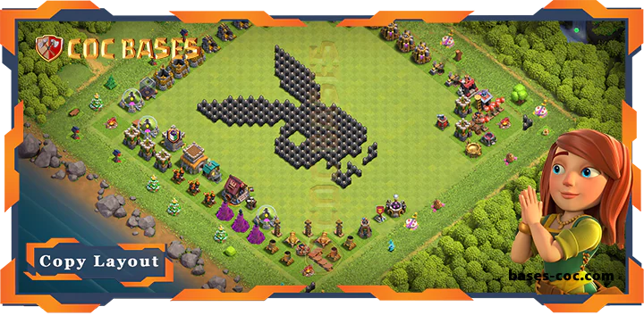

Make your Clash of Clans village tough to beat with our top Town Hall 8 bases! Town Hall 8 is a beast level, loaded with strong defenses like Air Defenses and the Barbarian King. Whether you’re fighting in Clan Wars, saving loot, or climbing trophies, our fresh TH8 Bases stop attackers dead. Copy the best TH8 Base Layouts with links. These are the updated Town Hall 8 Layouts after the latest Clash of Clans update. Jump in and grab awesome Town Hall 8 Bases to crush every battle!
About Town Hall 8
Town Hall 8 is a powerhouse in Clash of Clans. It costs 2,000,000 gold to upgrade from Town Hall 7 and takes 1 day, 12 hours. Your village gets a cool look with a fiery Town Hall. Town Hall 8 Bases unlock awesome defenses like Air Defenses, which shred air troops, and the Barbarian King, a hero who smashes enemies. You also get level 9 walls and strong troops like Dragons and Hog Riders. These make layouts great for stopping TH8 attacks like Dragon rushes, GoWiPe, or Hog Rider swarms.
Town Hall 8 is a favorite for players who want to rule wars and leaderboards. Supercell’s updates, like tweaks to Air Defense damage, keep the meta fresh. Your bases need to stay new to keep up. Our site has the latest COC designs to protect your TH8 village, whether you’re in Clan War Leagues or guarding loot. Go to bases-coc.com/bases/th8/ to copy bases made by top players. Videos show how they stop real TH8 attacks. Town Hall 8 is all about power, and our TH8 Bases keep you ahead.
Categories of TownHall 8 Bases
Your TH8 bases come in different types to fit how you play Clash of Clans at Town Hall 8. Each needs a special layout to work best against TH8’s attacks. Here are the main categories, inspired by bases-coc.com, with designs you can copy:
War/CWL Bases: These are for TH8 Clan Wars and Clan War Leagues. They stop three-star attacks from armies like Dragon rushes or GoWiPe. Air Defenses and the Barbarian King go in the center. Level 9 walls slow enemies down. Air bombs block TH8’s Balloons. Spring traps catch Hog Riders. Our war COC designs are tested against TH8 war attacks. Copy them at bases-coc.com/bases/th8/ to win wars.
Farming Bases: These save TH8’s gold, elixir, and dark elixir. Storages go deep inside, guarded by maxed Wizard Towers and Mortars. Walls make tight compartments to stop TH8 troops like Giants. The Town Hall is often outside to trick attackers away from loot. Giant Bombs stop ground attacks. Copy farming TH8 Layouts from our site to keep your TH8 loot safe while upgrading.
Hybrid Bases: These protect loot and trophies for TH8 players. They guard storages and the Town Hall with defenses like Cannons and Archer Towers. Hidden Teslas surprise TH8’s Hog Riders or Golems. They’re good for players who want both. Our site has hybrid designs that handle TH8 raids and trophy pushes. Copy them with links.
Anti 2 Stars Bases: These stop two-star attacks in TH8 wars or trophy matches. Defenses spread out to make attackers work hard. Mortars and Bomb Towers cover outer areas. Air bombs mess up TH8’s Balloon spam. Copy anti-2-star bases from bases-coc.com/bases/th8/ to keep enemies at one star.
Anti 3 Stars Bases: These block three-star attacks in TH8’s tough war scene. Compact layouts with central Air Defenses and layered walls tire out armies like Dragons. Hidden Teslas and spring traps stop TH8’s Hog Rider rushes. Our anti-3-star COC designs work against TH8 war plans. Copy them at bases-coc.com/bases/th8/.
Anti Air/Electro Bases: These crush TH8’s air attacks, like Dragons and Balloons. Maxed Air Defenses, air sweepers, and seeking air mines go in key spots. Walls push ground troops into Bomb Towers. These layouts destroy TH8’s air-heavy armies like Dragon spam. Copy anti-air/electro Townhall 8 Bases from our site to beat air raids.
Anti Trophy Bases: These make trophy pushing hard for TH8 attackers. The Town Hall sits in a strong core. Clan Castle troops like Wizards mess up TH8’s GoWiPe or Giant attacks. Defenses balance to counter TH8’s top strategies. Grab anti-trophy designs at bases-coc.com/bases/th8/ to hold your TH8 rank.
Funny/Troll Bases: These trick TH8 attackers for fun. They might leave the Town Hall open but hide Hidden Teslas or Giant Bombs to punish greedy raids. They catch TH8’s Giants off guard. Copy funny/troll bases from our site to mess with players in casual TH8 matches.
Legend League Bases: These are for TH8’s Legends League, where pros use attacks like GoHo or Dragon rushes. The Town Hall is in the center, guarded by maxed Wizard Towers and Mortars. Layered defenses stop TH8’s high-skill armies. Copy legend league bases from bases-coc.com/bases/th8/ to climb TH8’s ranks.









FAQs
TH8 War Bases with central Air Defenses and the Barbarian King rock. Copy them from bases-coc.com/bases/th8/.
Farming bases with storages inside and traps outside are perfect for TH8 loot protection. Check out our designs.
Our best TH8 War Base designs are built for Clan Wars with hidden traps, centralized defenses, and tough walls.
Conclusion
In conclusion, Town Hall 8 is a key stage in Clash of Clans, where players unlock powerful defenses and heroes. Having the right base layout can make all the difference, whether you're farming for resources, pushing trophies, or engaging in Clan Wars. The bases featured on our site are designed to give you an edge against the toughest attackers, helping you defend your loot and trophies. Browse our curated list of TH8 bases and start dominating your opponents today. Make sure to visit bases-coc.com/bases/th8/ for more layouts and tips!